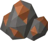
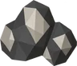
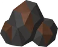
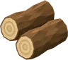
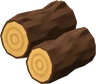
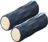

REALMFORGE TD
V1.3 • Greenvale Depths
Realm Map
Conquer Greenvale, then push into the volcanic Ashen Peaks.
Save & Test Accounts
Export creates a portable backup file. Import validates the file and keeps a safety copy of your current save before replacing it.
Danger Zone
Save Recovery
This only reads Realmforge saves stored on this device. Nothing is changed until you choose Restore This Save.
Greenvale Outskirts
Beat the final wave to clear the location and unlock the next map.
Recent Drops
Character
Combat Bonuses
Warriors train Attack + Strength. Rangers train Ranged. Mages train Magic. All combat also trains Hitpoints; clearing waves trains Defence.
Skills
Greenvale Workshop
Choose a skill and an activity to train automatically.
Mining

Copper RockMining Lv 1 • 15 XP • 2.5 sec

Tin RockMining Lv 1 • 15 XP • 2.5 sec

Ironvale VeinMining Lv 10 • 42 XP • 4.2 sec
Mining Lv 25 • 83 XP • 5.2 sec
Woodcutting

Greenvale TreeWoodcutting Lv 1 • 38 XP • 3 sec

Oakheart TreeWoodcutting Lv 10 • 90 XP • 4 sec

Frostpine TreeWoodcutting Lv 25 • 149 XP • 5 sec
Smelting
1 Copper ore + 1 Tin ore • 18 Smithing XP • 3 sec
2 Ironvale ore • Smithing Lv 12 • 45 XP • 3.8 sec
Smithing Lv 27 • 2 Frostsilver ore • 98 XP • 4.8 sec
Fishing
Fishing Lv 1 • 15 XP • 2.4 sec
Fishing Lv 8 • 36 XP • 3.3 sec
Fishing Lv 18 • 63 XP • 4.3 sec
Cooking
Cooking Lv 1 • 18 XP • 2.2 sec
Cooking Lv 8 • 42 XP • 3 sec
Cooking Lv 18 • 75 XP • 3.9 sec
Fletching & Crafting
Smithing
Bank
Equipment
Quest Journal
Meet characters across Realmforge and complete story-driven objectives for permanent rewards.
Monster Hunter Guild
Current Assignment
Hunter Rewards
Rare Monster Materials
Assignment kills count automatically in campaign maps and boss hunts. Certain monsters now have very rare material drops.
Boss Hunting
Defeat a region boss in the campaign to unlock its repeatable 3-wave hunt.
Milestones
Boss milestones are reached at 10, 25, 50, 100 and 250 kills. Each milestone awards coins once.
Dungeons
Endurance challenges where lives and tower placements carry through every room. Clear the regional campaign boss to unlock its dungeon.
Dungeon Supply Bag 0/8
Prepare cooked food here before entering Greenvale Depths.
Dungeon rewards are rolled only after defeating the final boss and completing all rooms.
Collection Log
Boss uniques stay recorded once obtained.